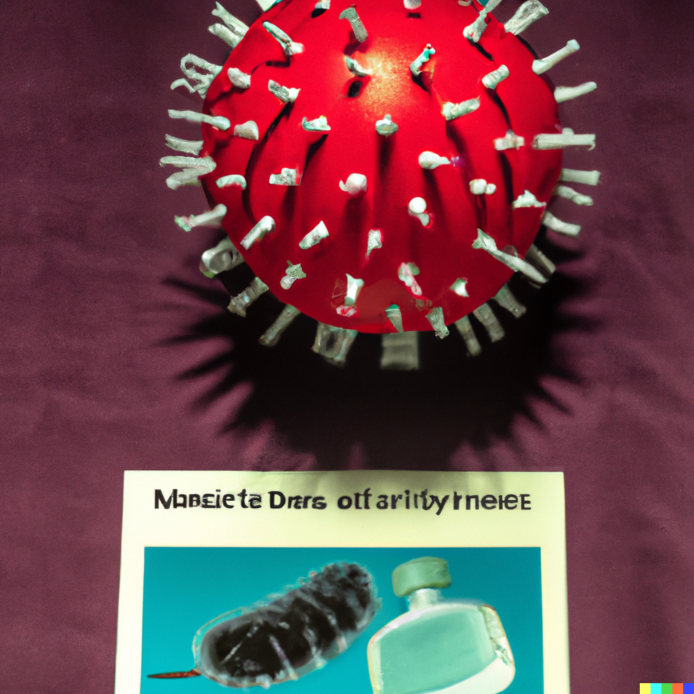
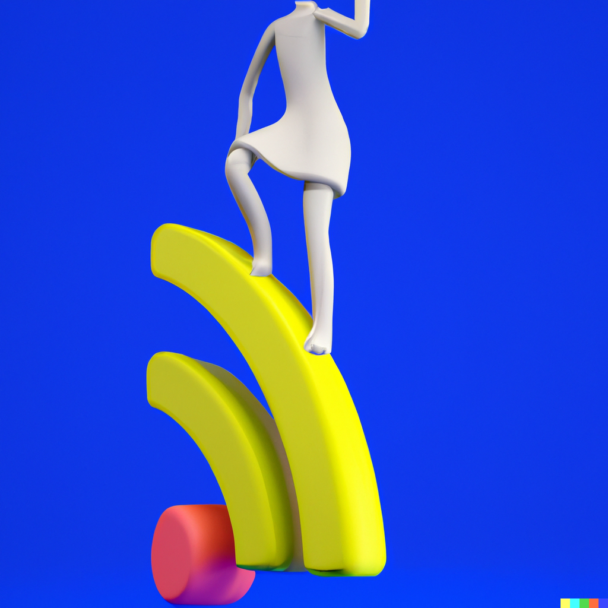
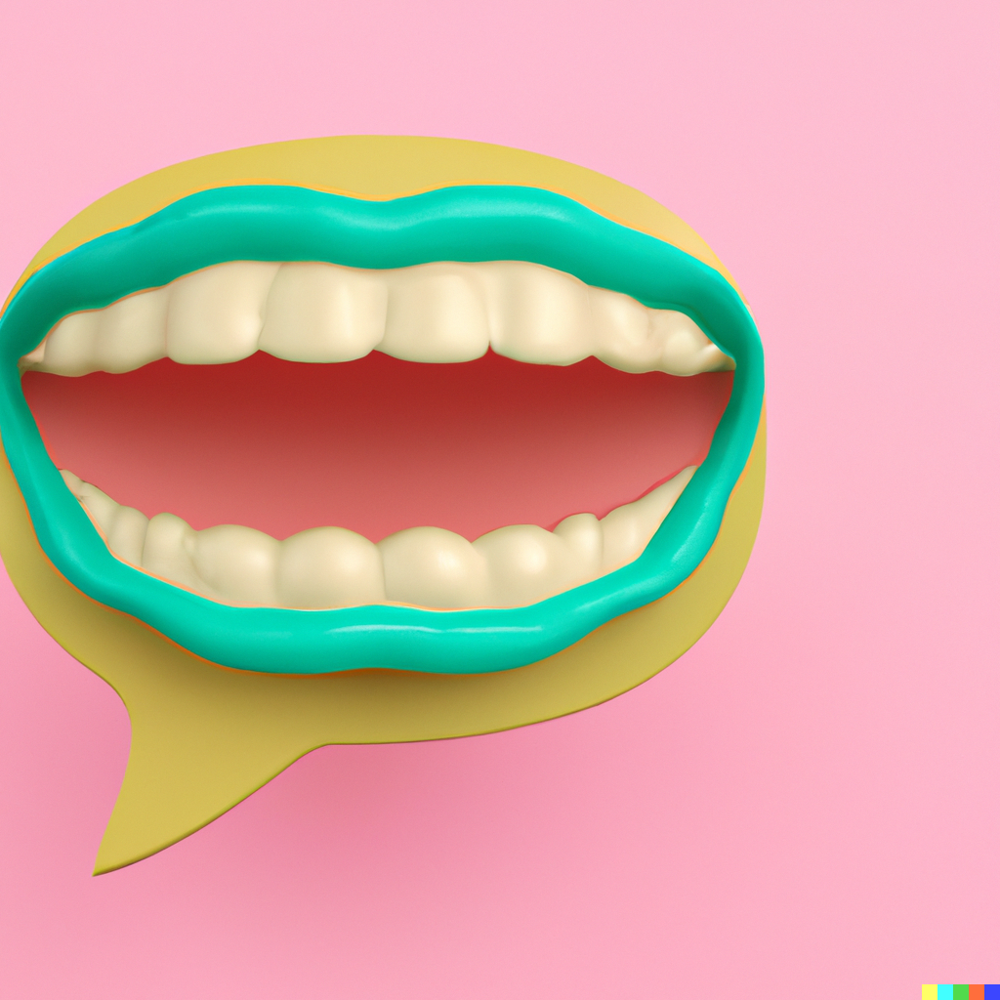
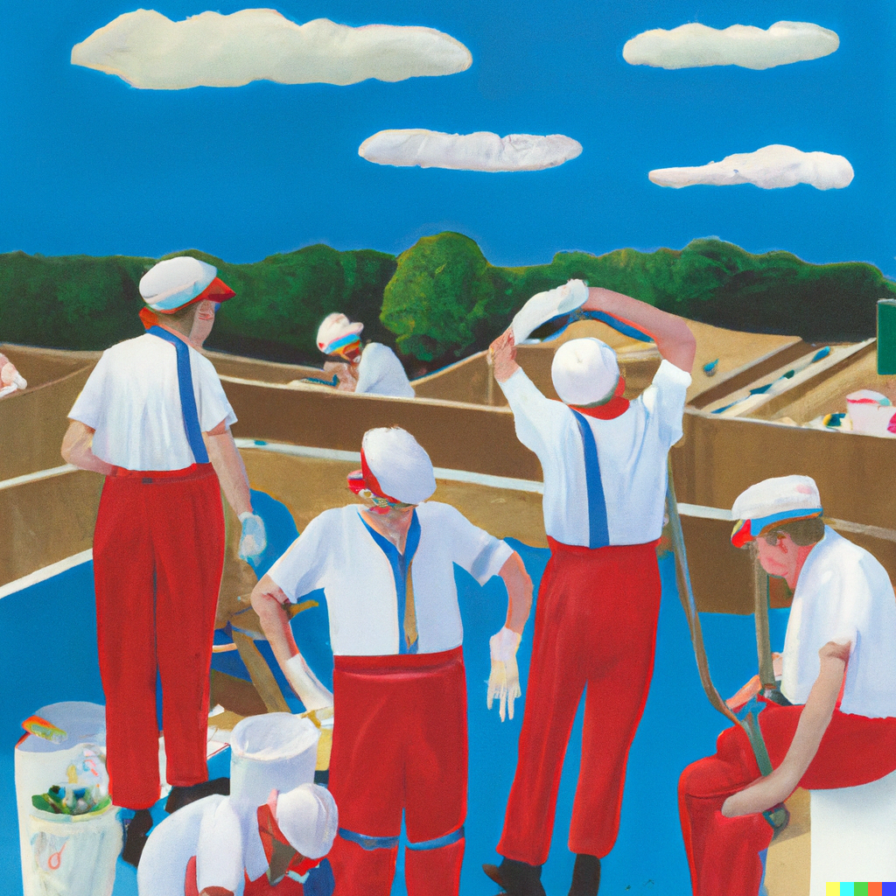

CASE STUDIES

Get NHS advice about COVID-19
Lead designer for COVID-19 information on the NHS website.
Service design
Design and build digital services for the NHS
Creating consistency, documentation, guidance and tools for building digital NHS services
Interaction design
Improving NHS Wifi for patients
Led a service design discovery to understand how NHS wifi has been implemented, identifying future improvement opportunities
Service design
How do I pronounce my medicine?
Addressing a user need to support the pronunciation of difficult medicine names
Interaction design
Plan and manage a workforce
Leading a service design discovery to understand the current processes, tools, and teams in the Probation workforce
WORK IN PROGRESS
Service design